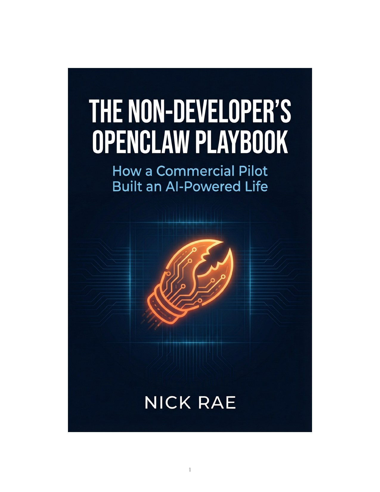
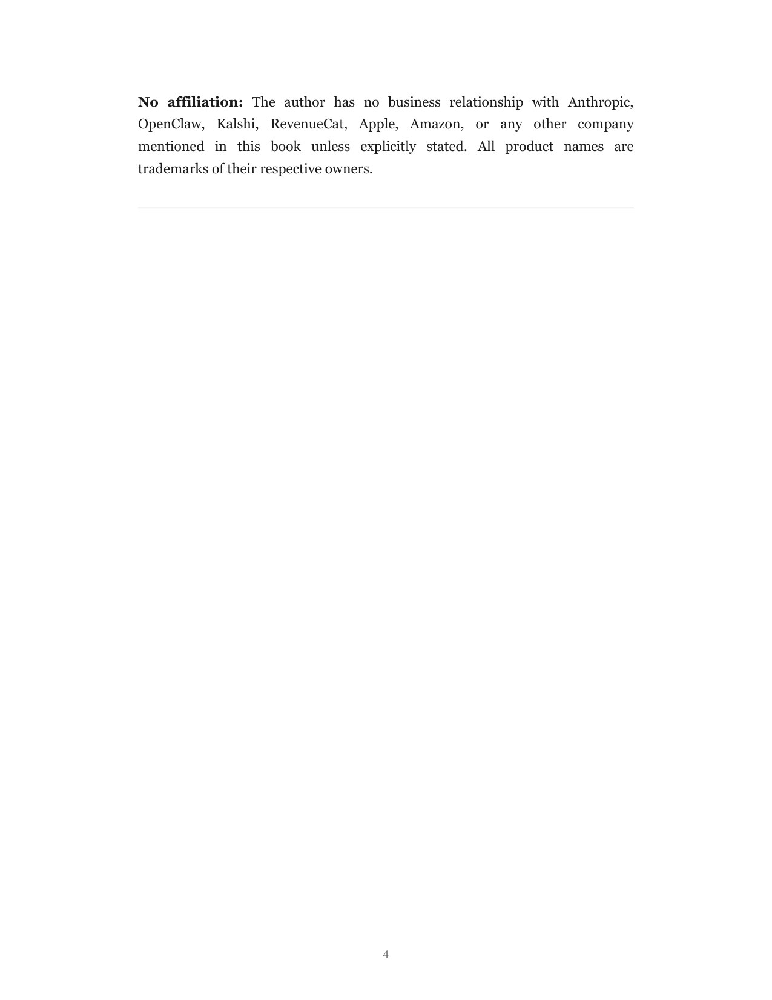
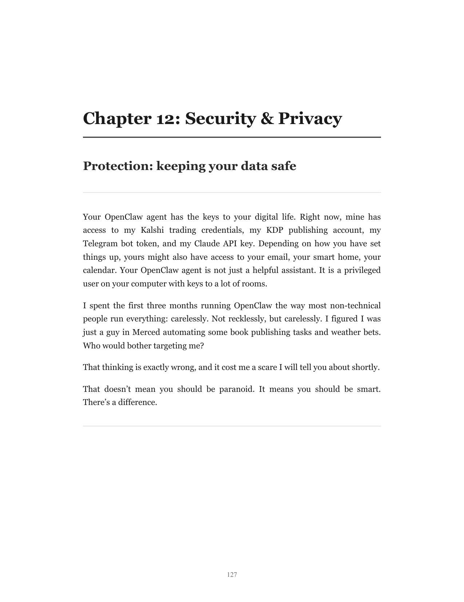

Six months ago I couldn't tell you the difference between JSON and JavaScript. I'm a commercial pilot who manages a car electronics shop in Merced, California. I'm 46. I have two adult sons and a mortgage. I am not the target demographic for "AI agent frameworks."
But I needed more flight hours. And flight hours cost money. So I started building things that make money while I'm at work, and I used OpenClaw to do it.
My OpenClaw agent runs on an iMac in my living room. Here's what the stack actually does while I'm at work selling car stereos:
None of this required me to become a developer first. I still have to make judgment calls, review output, and kill bad ideas. The difference is that OpenClaw turns those decisions into finished work instead of another abandoned Notion page.
The playbook isn't a manual. It's a case study with every disaster included.
Like the night I accidentally spawned too many high-end sub-agents and burned through more API credit than I meant to. Or the week I routed too much automation through one provider and learned that rate limits do not care about my little empire.
Or the Kalshi bot that looked great in paper trading, then proved the live gate needed to be harsher. Or the app ideas I should have killed earlier. Those are documented too, with the exact moment the useful lesson showed up wearing steel-toed boots.
The playbook covers what I wish someone had told me before I started: how to structure your agent's personality, set up cron jobs that do not eat your budget, delegate to coding agents without losing control, keep secrets out of public configs, and decide which automations deserve to exist.
You don't need to be a pilot. You need to be someone who wants an AI agent doing real work, not just answering questions. If you have a Mac, a Telegram account, and a willingness to pay $30/month in API costs, you can run what I run.
The playbook is a practical starter kit built from real use: copy-paste cron configs, reusable prompt templates, and the mistakes that taught me where agent systems actually break. Not screenshots of menus. Not theory.
Here are three real pages from the PDF so you can see what you're actually buying: cover, table of contents, and an interior page from the security chapter with concrete config examples.



Start with the 16-page free sample, or get the full PDF + EPUB. Use code FIRSTFLIGHT for 30% off.
All of this feeds into Flight Funded, my public experiment to fund flight hours through side projects. The playbook is one revenue stream alongside KDP workbooks, a Kalshi trading bot, and iOS apps. Every dollar tracked in public.
I need 129 more hours to reach the 500-hour Part 135 target. At roughly $200/hour, that's a real funding problem, not a motivational quote. The playbook is one of the cleaner ways to turn what I learned building the system into something people can actually buy.
If this page was useful, these are the next three pages worth your time.
New here? Start at the homepage or browse the full blog archive.